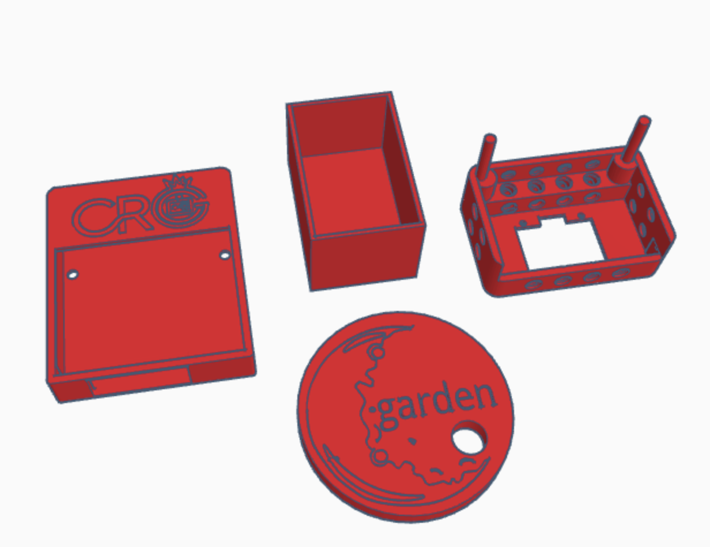

Estructura MoonGarden
La estructura del prototipo "Moon Garden" está cuidadosamente diseñado con Tinkercad para ser un ejemplo de integración entre fabricación aditiva, electrónica de control y el cultivo. Este diseño modular resulta totalmente accesible para su montaje en Educación Primaria.
| El componente más visible y central del Moon Garden es una cúpula semiesférica de acrílico transparente de 20 cm de diámetro con un borde periférico. La elección de este elemento no es casual. Por un lado, proporciona una visión clara y directa del cultivo interior, permitiendo una monitorización visual constante. Por otro lado, sus dimensiones están cuidadosamente seleccionadas para que el invernadero sea fácil de transportar e integrar en cualquier entorno de aprendizaje. |
|
Se ha diseñado una base modular que consta de dos piezas impresas en 3D. Estas piezas se conectan entre sí de forma ingeniosa y segura mediante un enganche tipo puzzle. Este diseño se ajusta a camas de impresión estándar con un volumen de 256 mm x 256 mm x 256 mm. Una de las piezas base cuenta con un compartimento anexo diseñado específicamente para contener los la bomba de agua. Del mismo modo, en la otra pieza hay un hueco para albergar la placa ESP32 micro:STEAMaker y la shield de conexiones. Esta base modular está internamente hueca, para el paso protegido de todo el cableado. Este enfoque mejora la estética y la seguridad del prototipo. |
Archivos de impresión 3D
Se presentan los siguientes archivos en formato stl necesarios para la construcción del invernadero lunar.
 |
|||
| MoonGardenSTL.zip | |||